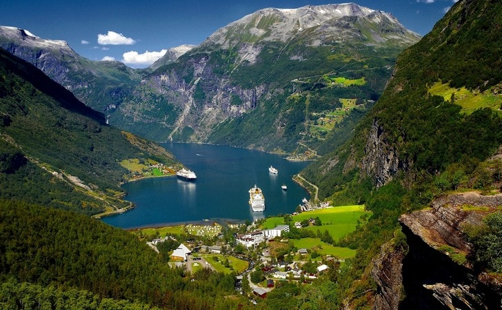
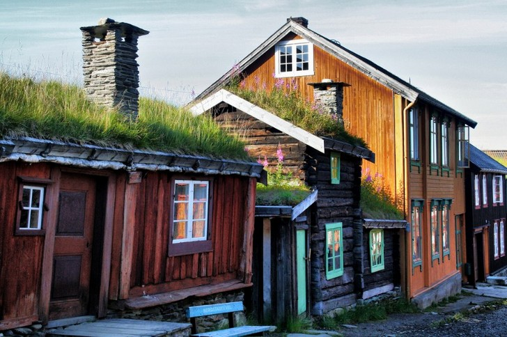
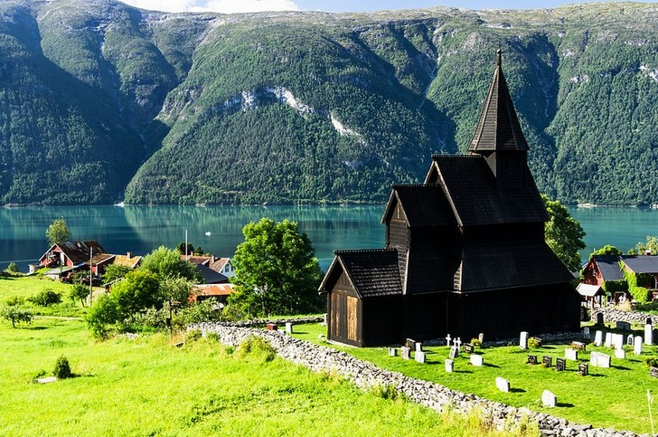
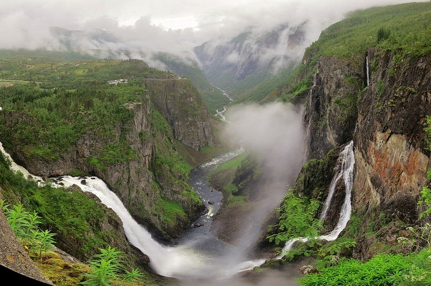
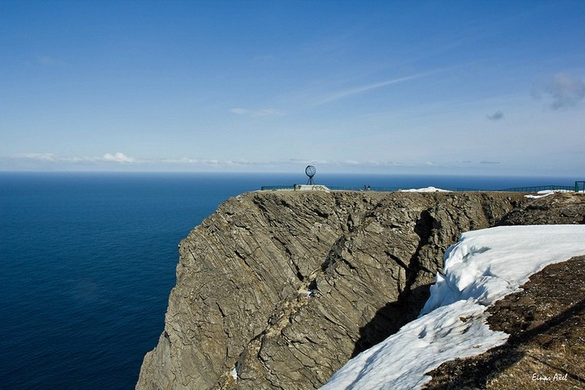
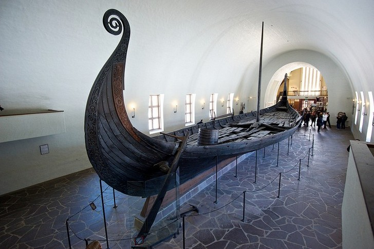
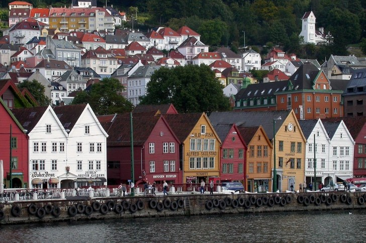
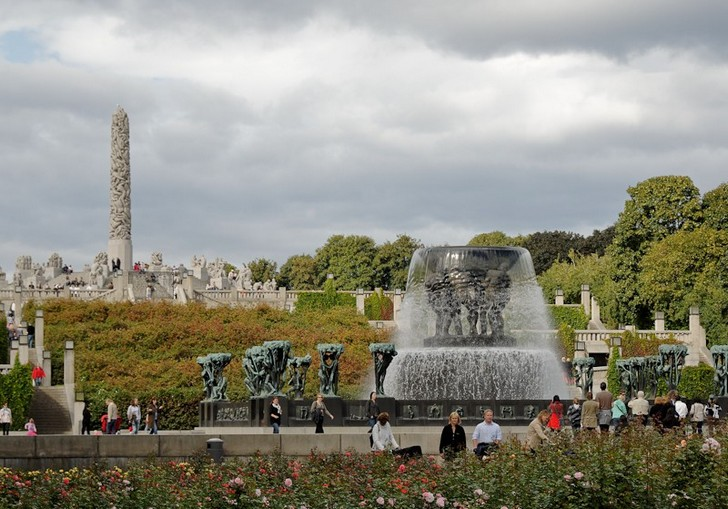
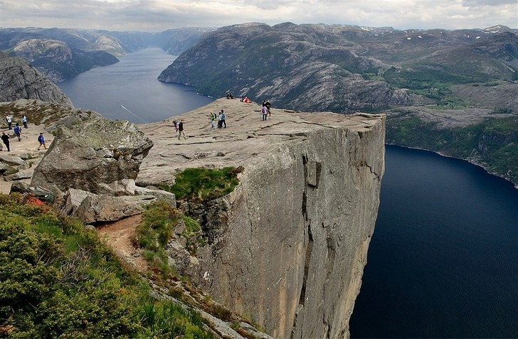

Величественные водопады, отвесные скалы, высотой около полутора километров, белоснежные ледники и заброшенные фермы, расположенные на небольших горных площадках, составляют неизъяснимое очарование одного из самых живописных фьордов Норвегии. Расположенный рядом Музей фьордов знакомит туристов с географической жизнью страны.
Крохотный норвежский город, известный с XVII века как центр разработки меди, до сих пор хранит своё историческое наследие: его центр представлен уникальными деревянными домами, построенными несколько веков назад. Местный художник Х.Сольберг очень любил Рёрус и часто рисовал город с прилегающими к нему окрестностями.
Возведённая в начале XII века деревянная церковь в Урнесе является ярким образцом уникального «звериного стиля», характеризующегося асимметричностью орнамента и использованием животных мотивов. Последние рисуют на ставкирке сцену борьбы льва (христианства) со змеем (язычеством). Существует версия, что на резных панелях храма запечатлены сюжеты из скандинавской мифологии.
Ста восьмидесяти двух метровый водопад – самый популярный в Норвегии. Расположенный в долине Мобёдален и являющийся частью реки Бьорейу, он наиболее красив у подножия, к которому идёт туристическая тропа местного Национального маршрута. Вид сверху – ещё одна удобная точка для наблюдения за водопадом Вёрингсфоссен.
Расположенный на острове Магерё мыс Нордкап представляет собой крупный, возвышающийся на триста семь метров, выступ гранитной скалы, сплошь усеянный трещинами. Он является самой северной точкой (имеющей подъездные пути) общего Европейского рынка и содержит удобную смотровую площадку, с которой открывает величественный вид на Баренцево море.
В здании начала XX века, стоящем на полуострове Бюгдё, можно увидеть три огромных корабля викингов, построенных в IX веке и найденных спустя тысячу лет в водах Осло. Присутствовавшие на грандиозных корабельных сооружениях предметы также входят в музейную коллекцию: старинные деревянные санки и телеги, посуду, домашний скарб и фрагменты тканей сегодня может увидеть каждый желающий.
Ганзейская набережная Бергена состоит из разноцветных деревянных домов, построенных до начала XVIII века. Многие старинные здания были реконструированы после многочисленных пожаров, но их каменные подвалы могут похвастаться пятисотлетней историей. Современный Брюгген – место встречи художников, работающих в своих мастерских, и туристов, посещающих местные сувенирные лавочки.
Передающие человеческие состояния скульптуры Густава Вигеланда составляют отдельную композицию крупного парка Осло – Фрогнера. Спортивная борьба, танцы, бег, объятия – всё, что делает и чем живёт человек, воплотилось в более чем двухстах застывших фигурах. Некоторые композиции парка носят аллегорический характер. К их числу относятся скульптуры «Сердитого малыша» и «Мужчины, атакованного младенцами».
Гигантский утёс, возвышающийся над Люсе-фьордом на высоту в шестьсот четыре метра, заканчивается плоской, квадратной площадкой. Путь к ней проходит через живописные горные ландшафты и занимает около двух часов. «Кафедра проповедника» знакомит туристов с несколькими поясами растительности: её подножие покрыто лесами, к вершине от них остаются только мхи да лишайники.
 Наверх